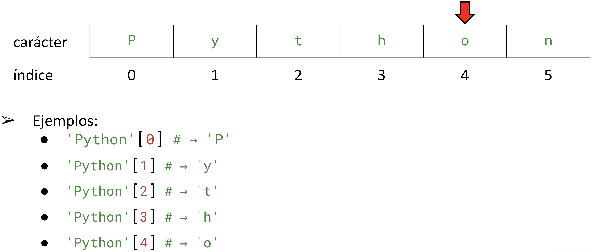

<!DOCTYPE html>
<html lang="en">
  <head>
    <meta charset="utf-8" />
    <meta name="viewport" content="width=device-width, initial-scale=1.0, maximum-scale=1.0, user-scalable=no" />

    <title></title>
    <link rel="stylesheet" href="dist/reveal.css" />
    <link rel="stylesheet" href="dist/theme/iph.css" id="theme" />
    <link rel="stylesheet" href="plugin/highlight/spyder.css" />
	<link rel="stylesheet" href="css/layout.css" />
	<link rel="stylesheet" href="plugin/customcontrols/style.css">


    <script defer src="dist/fontawesome/all.min.js"></script>

	<script type="text/javascript">
		var forgetPop = true;
		function onPopState(event) {
			if(forgetPop){
				forgetPop = false;
			} else {
				parent.postMessage(event.target.location.href, "app://obsidian.md");
			}
        }
		window.onpopstate = onPopState;
		window.onmessage = event => {
			if(event.data == "reload"){
				window.document.location.reload();
			}
			forgetPop = true;
		}

		function fitElements(){
			const itemsToFit = document.getElementsByClassName('fitText');
			for (const item in itemsToFit) {
				if (Object.hasOwnProperty.call(itemsToFit, item)) {
					var element = itemsToFit[item];
					fitElement(element,1, 1000);
					element.classList.remove('fitText');
				}
			}
		}

		function fitElement(element, start, end){

			let size = (end + start) / 2;
			element.style.fontSize = `${size}px`;

			if(Math.abs(start - end) < 1){
				while(element.scrollHeight > element.offsetHeight){
					size--;
					element.style.fontSize = `${size}px`;
				}
				return;
			}

			if(element.scrollHeight > element.offsetHeight){
				fitElement(element, start, size);
			} else {
				fitElement(element, size, end);
			}		
		}


		document.onreadystatechange = () => {
			fitElements();
			if (document.readyState === 'complete') {
				if (window.location.href.indexOf("?export") != -1){
					parent.postMessage(event.target.location.href, "app://obsidian.md");
				}
				if (window.location.href.indexOf("print-pdf") != -1){
					let stateCheck = setInterval(() => {
						clearInterval(stateCheck);
						window.print();
					}, 250);
				}
			}
	};


        </script>
  </head>
  <body>
    <div class="reveal">
      <div class="slides"><section  data-markdown><script type="text/template"><!-- .slide: class="has-light-background drop" data-background-color="#f8f8f8" -->
<div class="" style="position: absolute; left: 0px; top: 0px; height: 700px; width: 960px; min-height: 700px; display: flex; flex-direction: column; align-items: center; justify-content: center" absolute="true">

### <i class="fas fa-award"></i> IP Honores

#### *Más operaciones de los strings*

[Eduardo Rosales](mailto:ee.rosales24@uniandes.edu.co)

Departamento de Ingeniería de Sistemas y Computación

Universidad de los Andes
</div></script></section><section  data-markdown><script type="text/template"><!-- .slide: class="has-light-background drop" data-background-color="#f8f8f8" -->
<div class="" style="position: absolute; left: 0px; top: 0px; height: 700px; width: 960px; min-height: 700px; display: flex; flex-direction: column; align-items: center; justify-content: center" absolute="true">

#### `str.format()`

- Formateo de strings
	- Con marcadores de posición 
		- Para expresiones
- Sintaxis: 
```Python
 'string {}'.format(expresion)
```
- `expresion` se evalúa en tiempo de ejecución
- Compatible con cualquier versión de Python
- Soporta el formateo de decimales
- Ayuda:  [format](https://docs.python.org/3/library/stdtypes.html#str.format)
</div></script></section><section  data-markdown><script type="text/template"><!-- .slide: class="has-light-background drop" data-background-color="#f8f8f8" -->
<div class="" style="position: absolute; left: 0px; top: 0px; height: 700px; width: 960px; min-height: 700px; display: flex; flex-direction: column; align-items: center; justify-content: center" absolute="true">

#### `str.format()` - Ejemplos

```Python
print('Result: {}'.format(5))  # → 'Result: 5'

print('{} + {} = {}'.format(20, 30, 20 + 30))  # → '20 + 30 = 50'
# `(20, 30, 20 + 30)` se resuelve en tiempo de ejecución

print('{} / {} = {:.2f}'.format(1, 3, 1 / 3))  # → '1 / 3 = 0.33
# `{:.2f}` se formatea, usando dos decimales
```
</div></script></section><section  data-markdown><script type="text/template"><!-- .slide: class="has-light-background drop" data-background-color="#f8f8f8" -->
<div class="" style="position: absolute; left: 0px; top: 0px; height: 700px; width: 960px; min-height: 700px; display: flex; flex-direction: column; align-items: center; justify-content: center" absolute="true">

###  f-strings
    
- Formateo de strings usando una 
	- Expresión embebida (integrada)
- Sintaxis:
    ```Python
 f'string {expresion}'
```

- `expresion` se evalúa en tiempo de ejecución
- Soporta formateo de decimales
- Introducida a partir de Python 3.6
- Ayuda: [f-strings ](https://docs.python.org/3/tutorial/inputoutput.html#tut-f-strings)
</div></script></section><section  data-markdown><script type="text/template"><!-- .slide: class="has-light-background drop" data-background-color="#f8f8f8" -->
<div class="" style="position: absolute; left: 0px; top: 0px; height: 700px; width: 960px; min-height: 700px; display: flex; flex-direction: column; align-items: center; justify-content: center" absolute="true">

###  f-strings - Ejemplos

```Python
print(f'Result: {5}')  # → 'Result: 5'
print(f'{20} + {30} = {20 + 30}')  # → '20 + 30 = 50'   
print(f'{1} / {3} = {1 / 3:.2f}')  # → '1 / 3 = 0.33'
```
</div></script></section><section  data-markdown><script type="text/template"><!-- .slide: class="has-light-background drop" data-background-color="#f8f8f8" -->
<div class="" style="position: absolute; left: 0px; top: 0px; height: 700px; width: 960px; min-height: 700px; display: flex; flex-direction: column; align-items: center; justify-content: center" absolute="true">

### Aspectos de codificación - ASCII

- American Standard Code for Information Interchange
- Desarrollado en los 60s para estandarizar la comunicación digital
- 127 Caracteres: 
	- Incluye letras, dígitos, símbolos de puntuación y comandos de control
- 7 Bits: 
	- Cada carácter se representa con 7 bits
		- Comúnmente almacenado en 8 bits (1 byte)
- Interoperabilidad: 
	- Facilita el intercambio de datos entre dispositivos y software
</div></script></section><section  data-markdown><script type="text/template"><!-- .slide: class="has-light-background drop" data-background-color="#f8f8f8" -->
<div class="" style="position: absolute; left: 0px; top: 0px; height: 700px; width: 960px; min-height: 700px; display: flex; flex-direction: column; align-items: center; justify-content: center" absolute="true">


</div></script></section><section  data-markdown><script type="text/template"><!-- .slide: class="has-light-background drop" data-background-color="#f8f8f8" -->
<div class="" style="position: absolute; left: 0px; top: 0px; height: 700px; width: 960px; min-height: 700px; display: flex; flex-direction: column; align-items: center; justify-content: center" absolute="true">

### Unicode

- Permite la representación de texto 
	- De la mayoría de sistemas de escritura
- Cobertura: 
	- Incluye más de 140,000 caracteres 
	- Abarcando escrituras modernas, símbolos, emojis y caracteres históricos
- Codificación universal: UTF-8, UTF-16, UTF-32
-  Hay una lista de [códigos Unicode](https://en.wikipedia.org/wiki/List_of_Unicode_characters)
</div></script></section><section  data-markdown><script type="text/template"><!-- .slide: class="has-light-background drop" data-background-color="#f8f8f8" -->
<div class="" style="position: absolute; left: 0px; top: 0px; height: 700px; width: 960px; min-height: 700px; display: flex; flex-direction: column; align-items: center; justify-content: center" absolute="true">

### `ord()`

- Retorna el valor Unicode de un carácter
- Sintaxis:
```Python
ord(c)
```
	- `c`: String de un solo carácter
- Útil para obtener la representación numérica 
	- De un carácter
- Ayuda:  [ord](https://docs.python.org/3.4/library/functions.html#ord)
</div></script></section><section  data-markdown><script type="text/template"><!-- .slide: class="has-light-background drop" data-background-color="#f8f8f8" -->
<div class="" style="position: absolute; left: 0px; top: 0px; height: 700px; width: 960px; min-height: 700px; display: flex; flex-direction: column; align-items: center; justify-content: center" absolute="true">

### `ord()` -  Ejemplos

```Python
ord('a')  # → 97 (valor Unicode de 'a')
ord('A')  # → 65 
ord('0')  # → 48 
ord('ñ')  # → 241 
ord(' ')  # → 32
```
</div></script></section><section  data-markdown><script type="text/template"><!-- .slide: class="has-light-background drop" data-background-color="#f8f8f8" -->
<div class="" style="position: absolute; left: 0px; top: 0px; height: 700px; width: 960px; min-height: 700px; display: flex; flex-direction: column; align-items: center; justify-content: center" absolute="true">

### `chr()`

- Retorna el carácter que corresponde a un valor Unicode
- Sintaxis:
```Python
chr(i)
```
	- `i`: Entero en el rango de [códigos Unicode](https://en.wikipedia.org/wiki/List_of_Unicode_characters)
- Útil para convertir valores Unicode 
	- A sus caracteres correspondientes
- Ayuda:  [chr](https://docs.python.org/3.4/library/functions.html#chr)
</div></script></section><section  data-markdown><script type="text/template"><!-- .slide: class="has-light-background drop" data-background-color="#f8f8f8" -->
<div class="" style="position: absolute; left: 0px; top: 0px; height: 700px; width: 960px; min-height: 700px; display: flex; flex-direction: column; align-items: center; justify-content: center" absolute="true">

### `chr()` - Ejemplos

```Python
chr(97)  # → 'a' (97 es valor Unicode de 'a')
chr(65)  # → 'A' 
chr(48)  # → '0' 
chr(241)  # → 'ñ' 
chr(32)  # → ' '
```
</div></script></section><section  data-markdown><script type="text/template"><!-- .slide: class="has-light-background drop" data-background-color="#f8f8f8" -->
<div class="" style="position: absolute; left: 0px; top: 0px; height: 700px; width: 960px; min-height: 700px; display: flex; flex-direction: column; align-items: center; justify-content: center" absolute="true">

### Comparación (lexicográfica) de strings (1/4)

- Comparación de dos strings, carácter a carácter
- El orden está determinado por
	- Los [códigos Unicode](https://en.wikipedia.org/wiki/List_of_Unicode_characters)
- Ej:

```Python
ord('a')  # → 97

ord('B')  # → 65

'B' < 'a'  # → True
```
</div></script></section><section  data-markdown><script type="text/template"><!-- .slide: class="has-light-background drop" data-background-color="#f8f8f8" -->
<div class="" style="position: absolute; left: 0px; top: 0px; height: 700px; width: 960px; min-height: 700px; display: flex; flex-direction: column; align-items: center; justify-content: center" absolute="true">

### Comparación (lexicográfica) de strings (2/4)

- Se comparan los caracteres uno a uno
	- Siguiendo el orden de sus códigos Unicode
- El primer carácter diferente en dos strings determina el resultado
</div></script></section><section  data-markdown><script type="text/template"><!-- .slide: class="has-light-background drop" data-background-color="#f8f8f8" -->
<div class="" style="position: absolute; left: 0px; top: 0px; height: 700px; width: 960px; min-height: 700px; display: flex; flex-direction: column; align-items: center; justify-content: center" absolute="true">

### Comparación (lexicográfica) de strings (3/4)

- Caso todo minúsculas:

```python
'apple' < 'banana'. # → True (porque 'a' < 'b')
'car' > 'cat'. # → False (porque 'r' < 't')
```

- Caso con minúsculas y mayúsculas:

```python
'Zebra' < 'apple'  # → True ('Z' = 90, 'a' = 97) 
'Zoo' > 'apple'  # → False ('Z' = 90, 'a' = 97) 
```
</div></script></section><section  data-markdown><script type="text/template"><!-- .slide: class="has-light-background drop" data-background-color="#f8f8f8" -->
<div class="" style="position: absolute; left: 0px; top: 0px; height: 700px; width: 960px; min-height: 700px; display: flex; flex-direction: column; align-items: center; justify-content: center" absolute="true">

### Comparación (lexicográfica) de strings (4/4)

- Caso números vs letras:

```python
'123' < 'abc'  # → True (porque '1' = 49 y 'a' = 97)
'9' > 'A'. # → False ('9' = 57, 'A' = 65)
```

- Caso con diferente longitud:

```python
'cat' < 'catalog'   # → True (3 vs. 7)
'hello' > 'hell'    # → True (5 vs 4)
```
</div></script></section><section  data-markdown><script type="text/template"><!-- .slide: class="has-light-background drop" data-background-color="#f8f8f8" -->
<div class="" style="position: absolute; left: 0px; top: 0px; height: 700px; width: 960px; min-height: 700px; display: flex; flex-direction: column; align-items: center; justify-content: center" absolute="true">

### ¿Cómo saber la longitud o tamaño de un string?
</div></script></section><section  data-markdown><script type="text/template"><!-- .slide: class="has-light-background drop" data-background-color="#f8f8f8" -->
<div class="" style="position: absolute; left: 0px; top: 0px; height: 700px; width: 960px; min-height: 700px; display: flex; flex-direction: column; align-items: center; justify-content: center" absolute="true">

### `len()`

- Retorna la longitud (tamaño) de un objeto    
- Sintaxis: 
```Python
len(objeto)
```

- Compatible con múltiples objetos
	- Por ejemplo **strings**
- Ayuda: [len](https://docs.python.org/3/library/functions.html#len)
</div></script></section><section  data-markdown><script type="text/template"><!-- .slide: class="has-light-background drop" data-background-color="#f8f8f8" -->
<div class="" style="position: absolute; left: 0px; top: 0px; height: 700px; width: 960px; min-height: 700px; display: flex; flex-direction: column; align-items: center; justify-content: center" absolute="true">

### `len()` - Ejemplos

```Python
len('')  # → 0 (string vacío)

len('Python')  # → 6 (`Python` tiene 6 caracteres)

len('Hello World!')  # → 12 (Los espacios son caracteres)
```
</div></script></section><section  data-markdown><script type="text/template"><!-- .slide: class="has-light-background drop" data-background-color="#f8f8f8" -->
<div class="" style="position: absolute; left: 0px; top: 0px; height: 700px; width: 960px; min-height: 700px; display: flex; flex-direction: column; align-items: center; justify-content: center" absolute="true">

### Operadores de pertenencia (o membresía) (1/2)

- `in`
- Sintaxis:
```Python
x in s
```
- `x`: elemento a buscar
- `s`: secuencia dentro de la cual buscar
- `x in s` : devuelve `True` 
	- Si se encuentra `x` en `s`
	- Caso contrario `False`
</div></script></section><section  data-markdown><script type="text/template"><!-- .slide: class="has-light-background drop" data-background-color="#f8f8f8" -->
<div class="" style="position: absolute; left: 0px; top: 0px; height: 700px; width: 960px; min-height: 700px; display: flex; flex-direction: column; align-items: center; justify-content: center" absolute="true">

### Operadores de pertenencia (o membresía) (2/2)

-  `not in`
- Sintaxis:
```Python
x not in s
```
- `x`: elemento a buscar
- `s`: secuencia dentro de la cual buscar
- `x not in s` : devuelve `True`
	- Si no se encuentra `x` en `s`
	- Caso contrario `False`
</div></script></section><section  data-markdown><script type="text/template"><!-- .slide: class="has-light-background drop" data-background-color="#f8f8f8" -->
<div class="" style="position: absolute; left: 0px; top: 0px; height: 700px; width: 960px; min-height: 700px; display: flex; flex-direction: column; align-items: center; justify-content: center" absolute="true">

### Operadores de pertenencia (o membresía) - Ejemplos

```Python
# Asumir ejecución secuencial de cada línea:
frase = '¡Python es divertido!'
' ' in frase  # → True
'!' in frase  # → True
'divertido' in frase  # → True
'z' in frase  # → False
'z' not in frase  # → True
'a' not in frase  # → True
```
</div></script></section><section  data-markdown><script type="text/template"><!-- .slide: class="has-light-background drop" data-background-color="#f8f8f8" -->
<div class="" style="position: absolute; left: 0px; top: 0px; height: 700px; width: 960px; min-height: 700px; display: flex; flex-direction: column; align-items: center; justify-content: center" absolute="true">

### `str` es una clase
    
- Una *clase* especifica comportamientos de objetos
- No es el objetivo del curso usar clases
- Basta con saber que
	- `str` es el "molde" 
		- Para crear strings
- Esto objetos tienen comportamientos
	-  Implementados vía funciones especiales
		- Denominadas *métodos*
</div></script></section><section  data-markdown><script type="text/template"><!-- .slide: class="has-light-background drop" data-background-color="#f8f8f8" -->
<div class="" style="position: absolute; left: 0px; top: 0px; height: 700px; width: 960px; min-height: 700px; display: flex; flex-direction: column; align-items: center; justify-content: center" absolute="true">

### `str` tiene métodos

- Por ejemplo, `str.format()`
	- Es un método de los strings


```python

"Resultado = {}".format(10 + 10)  # → 'Resultado = 20'
# No se podría invocar a format()
    # Si no se antecede de un string
```
</div></script></section><section  data-markdown><script type="text/template"><!-- .slide: class="has-light-background drop" data-background-color="#f8f8f8" -->
<div class="" style="position: absolute; left: 0px; top: 0px; height: 700px; width: 960px; min-height: 700px; display: flex; flex-direction: column; align-items: center; justify-content: center" absolute="true">

### ¿Cómo se invoca a un método de la clase `str`?

- Como al invocar funciones:
	- \+ Anteponiendo un objeto del tipo válido


- **En genérico:**
	- `str.nombre_metodo(arg_1, arg_2, .... arg_n)`
		- En donde: 
			- `str` es un objeto del tipo string
			- Se usa notación de punto, después del string
				- La invocación puede requerir cero, uno o `n` argumentos
</div></script></section><section  data-markdown><script type="text/template"><!-- .slide: class="has-light-background drop" data-background-color="#f8f8f8" -->
<div class="" style="position: absolute; left: 0px; top: 0px; height: 700px; width: 960px; min-height: 700px; display: flex; flex-direction: column; align-items: center; justify-content: center" absolute="true">

### Estudiemos un método de los strings como ejemplo
</div></script></section><section  data-markdown><script type="text/template"><!-- .slide: class="has-light-background drop" data-background-color="#f8f8f8" -->
<div class="" style="position: absolute; left: 0px; top: 0px; height: 700px; width: 960px; min-height: 700px; display: flex; flex-direction: column; align-items: center; justify-content: center" absolute="true">

### `str.isdigit()`
    
- Determina si el string
	- Es completamente dígitos
		- Esto es: `0` al `9`
- Retorna `True` si todos los caracteres son dígitos
	- Caso contrario `False`
- Ayuda:  [str.isdigit](https://docs.python.org/3/library/stdtypes.html#str.isdigit)
</div></script></section><section  data-markdown><script type="text/template"><!-- .slide: class="has-light-background drop" data-background-color="#f8f8f8" -->
<div class="" style="position: absolute; left: 0px; top: 0px; height: 700px; width: 960px; min-height: 700px; display: flex; flex-direction: column; align-items: center; justify-content: center" absolute="true">

### ¿Cómo se invoca al método `str.isdigit()`?

```python
# str.isdigit()
	# En donde: 
	    #`str` es un objeto del tipo string
		    # Del cual se desea saber si está compuesto por solo dígitos
			    # La invocación requiere cero argumentos
```
</div></script></section><section  data-markdown><script type="text/template"><!-- .slide: class="has-light-background drop" data-background-color="#f8f8f8" -->
<div class="" style="position: absolute; left: 0px; top: 0px; height: 700px; width: 960px; min-height: 700px; display: flex; flex-direction: column; align-items: center; justify-content: center" absolute="true">

### `str.isdigit()` - Ejemplos

```Python
'1234'.isdigit()  # → True (Todos son dígitos)

'1.5'.isdigit()  # → False: (El punto `.` no es un dígito)

'1 5'.isdigit()  # → False: (Los espacios no son dígitos)

'$5'.isdigit()  # → False: (Los símbolos no son dígitos)
```
</div></script></section><section  data-markdown><script type="text/template"><!-- .slide: class="has-light-background drop" data-background-color="#f8f8f8" -->
<div class="" style="position: absolute; left: 0px; top: 0px; height: 700px; width: 960px; min-height: 700px; display: flex; flex-direction: column; align-items: center; justify-content: center" absolute="true">

### Quiz I

- ¿Qué hace el siguiente programa?

```Python
pin = input('Por favor digite un PIN de cuatro dígitos: ')

if len(pin) != 4:
    print('El PIN debe tener cuatro dígitos de longitud')
else:
    print('El PIN se ha guardado')
```
</div></script></section><section  data-markdown><script type="text/template"><!-- .slide: class="has-light-background drop" data-background-color="#f8f8f8" -->
<div class="" style="position: absolute; left: 0px; top: 0px; height: 700px; width: 960px; min-height: 700px; display: flex; flex-direction: column; align-items: center; justify-content: center" absolute="true">

### Quiz I - Solución

```Python
pin = input('Por favor digite un PIN de cuatro dígitos: ')

if len(pin) != 4:
    print('El PIN debe tener cuatro dígitos de longitud')
else:
    print('El PIN se ha guardado')
```

- Solicita al usuario un PIN de 4 dígitos
- Si el PIN no coincide con esa longitud
	- Imprime: 
		- "El PIN debe tener 4 caracteres de longitud"
- Caso lo contrario, imprime:
	- "El PIN se ha guardado"
</div></script></section><section  data-markdown><script type="text/template"><!-- .slide: class="has-light-background drop" data-background-color="#f8f8f8" -->
<div class="" style="position: absolute; left: 0px; top: 0px; height: 700px; width: 960px; min-height: 700px; display: flex; flex-direction: column; align-items: center; justify-content: center" absolute="true">

### Quiz II

- ¿Qué hace el siguiente programa?

```Python
pin = input('Por favor digite un PIN de cuatro dígitos: ')
confirmacion_pin = input('Por favor confirme el PIN: ')

if len(pin) != 4:
    print('El PIN debe tener cuatro dígitos de longitud')
elif pin == confirmacion_pin:
    print('El PIN se ha guardado')
else:
    print('Error: Los PINs no coinciden')
```
</div></script></section><section  data-markdown><script type="text/template"><!-- .slide: class="has-light-background drop" data-background-color="#f8f8f8" -->
<div class="" style="position: absolute; left: 0px; top: 0px; height: 700px; width: 960px; min-height: 700px; display: flex; flex-direction: column; align-items: center; justify-content: center" absolute="true">

### Quiz II - Solución

```Python
pin = input('Por favor digite un PIN de cuatro dígitos: ')
confirmacion_pin = input('Por favor confirme el PIN: ')

if len(pin) != 4:
    print('El PIN debe tener cuatro dígitos de longitud')
elif pin == confirmacion_pin:
    print('El PIN se ha guardado')
else:
    print('Error: Los PINs no coinciden')
```

- Solicita al usuario un PIN de 4 dígitos
- Solicita al usuario que confirme el PIN
- Si el PIN no coincide con esa longitud, imprime: 
	- "El PIN debe tener 4 dígitos de longitud"
- Si ambas entradas coinciden, imprime: 
	- "El PIN se ha guardado"
- Caso alterno, imprime: 
	- "Error: los PINs no coinciden"
</div></script></section><section  data-markdown><script type="text/template"><!-- .slide: class="has-light-background drop" data-background-color="#f8f8f8" -->
<div class="" style="position: absolute; left: 0px; top: 0px; height: 700px; width: 960px; min-height: 700px; display: flex; flex-direction: column; align-items: center; justify-content: center" absolute="true">

### Quiz III

- ¿Qué hace el siguiente programa?

```Python
pin = input('Por favor digite un PIN de cuatro dígitos: ')
confirmacion_pin = input('Por favor confirme el PIN: ')

if len(pin) != 4:
    print('El PIN debe tener cuatro dígitos de longitud')
elif not pin.isdigit():
    print('El PIN debe contener sólo dígitos')
elif pin == confirmacion_pin:
    print('El PIN se ha guardado')
else:
    print('Error: Los PINs no coinciden')
```
</div></script></section><section  data-markdown><script type="text/template"><!-- .slide: class="has-light-background drop" data-background-color="#f8f8f8" -->
<div class="" style="position: absolute; left: 0px; top: 0px; height: 700px; width: 960px; min-height: 700px; display: flex; flex-direction: column; align-items: center; justify-content: center" absolute="true">

### Quiz III - Solución

- Pide al usuario un PIN de 4 dígitos
- Pide al usuario que confirme el PIN
- Si el PIN no coincide con esa longitud, imprime: 
	- "El PIN debe tener 4 dígitos de longitud"
- Si el PIN no contiene solo dígitos (0-9), imprime: 
	- "El PIN debe contener solo dígitos"
- Si ambas entradas coinciden, imprime: 
	- "El PIN se ha guardado"
- Caso alterno, imprime: 
	- "Error: Los PINs no coinciden"
</div></script></section><section  data-markdown><script type="text/template"><!-- .slide: class="has-light-background drop" data-background-color="#f8f8f8" -->
<div class="" style="position: absolute; left: 0px; top: 0px; height: 700px; width: 960px; min-height: 700px; display: flex; flex-direction: column; align-items: center; justify-content: center" absolute="true">

### Quiz IV

- ¿Qué hace el siguiente programa?

```Python
pin = input('Por favor digite un PIN de cuatro dígitos: ')
confirmacion_pin = input('Por favor confirme el PIN: ')
 
if pin == confirmacion_pin:
    if len(pin) != 4:
        print('El PIN debe tener cuatro dígitos de longitud')
    elif not pin.isdigit():
        print('El PIN debe contener sólo dígitos')
    else:
        print('El PIN se ha guardado')
else:
    print('Error: PIN distintos')
```
</div></script></section><section  data-markdown><script type="text/template"><!-- .slide: class="has-light-background drop" data-background-color="#f8f8f8" -->
<div class="" style="position: absolute; left: 0px; top: 0px; height: 700px; width: 960px; min-height: 700px; display: flex; flex-direction: column; align-items: center; justify-content: center" absolute="true">

### Quiz IV - Solución

- Pide al usuario un PIN de 4 dígitos y confirmación
- Si ambas entradas coinciden, chequea:
	- Si el PIN no tiene 4 dígitos, imprime: 
		- "El PIN debe tener 4 dígitos de longitud"
	- Si el PIN no es solo dígitos (0-9), imprime: 
		- "El PIN debe contener solo dígitos"
	- Caso alterno, imprime: 
		- "El PIN se ha guardado"
- Caso alterno, imprime: "Error: PIN distintos"
</div></script></section><section  data-markdown><script type="text/template"><!-- .slide: class="has-light-background drop" data-background-color="#f8f8f8" -->
<div class="" style="position: absolute; left: 0px; top: 0px; height: 700px; width: 960px; min-height: 700px; display: flex; flex-direction: column; align-items: center; justify-content: center" absolute="true">

### Conozcamos otros **métodos** de la clase `str`
</div></script></section><section  data-markdown><script type="text/template"><!-- .slide: class="has-light-background drop" data-background-color="#f8f8f8" -->
<div class="" style="position: absolute; left: 0px; top: 0px; height: 700px; width: 960px; min-height: 700px; display: flex; flex-direction: column; align-items: center; justify-content: center" absolute="true">

### `str.lower()`

- Retorna una copia del string original 
	- En minúsculas 
- Se usa para hacer comparaciones 
	- Sin importar mayúsculas y minúsculas
- Ayuda:  [str.lower](https://docs.python.org/3/library/stdtypes.html#str.lower)
</div></script></section><section  data-markdown><script type="text/template"><!-- .slide: class="has-light-background drop" data-background-color="#f8f8f8" -->
<div class="" style="position: absolute; left: 0px; top: 0px; height: 700px; width: 960px; min-height: 700px; display: flex; flex-direction: column; align-items: center; justify-content: center" absolute="true">

### `str.lower()` - Ejemplos

```Python
'abcd'.lower()  # → 'abcd'

'ABCD'.lower()  # → 'abcd'

''.lower()  # → '' (String vacíos permanecen sin cambios)

'ABCD#%'.lower()  # → 'abcd#%': los símbolos no son afectados

'XYZ'.lower() == 'xyz'  # → True
```
</div></script></section><section  data-markdown><script type="text/template"><!-- .slide: class="has-light-background drop" data-background-color="#f8f8f8" -->
<div class="" style="position: absolute; left: 0px; top: 0px; height: 700px; width: 960px; min-height: 700px; display: flex; flex-direction: column; align-items: center; justify-content: center" absolute="true">

### `str.upper()`

- Retorna una copia del string original
	- En mayúsculas 
- Se usa para hacer comparaciones 
	- Sin importar mayúsculas o minúsculas
- Ayuda:  [str.upper](https://docs.python.org/3/library/stdtypes.html#str.upper)
</div></script></section><section  data-markdown><script type="text/template"><!-- .slide: class="has-light-background drop" data-background-color="#f8f8f8" -->
<div class="" style="position: absolute; left: 0px; top: 0px; height: 700px; width: 960px; min-height: 700px; display: flex; flex-direction: column; align-items: center; justify-content: center" absolute="true">

### `str.upper()` - Ejemplos

```Python
'ABCD'.upper()  # → 'ABCD'

'abcd'.upper()  # → 'ABCD'

''.upper()  # → '' (String vacíos permanecen sin cambios)

'abcd&'.upper()  # → 'ABCD&' (Los símbolos no son afectados)

'xyz'.upper() == 'XYZ'  # → True
```
</div></script></section><section  data-markdown><script type="text/template"><!-- .slide: class="has-light-background drop" data-background-color="#f8f8f8" -->
<div class="" style="position: absolute; left: 0px; top: 0px; height: 700px; width: 960px; min-height: 700px; display: flex; flex-direction: column; align-items: center; justify-content: center" absolute="true">

### `str.title()`

- Retorna una copia del string original 
	- En formato de _título_:
		- La primera letra en mayúscula
			- El resto en minúsculas
- Se usa para formatear títulos y encabezados
- Ayuda: [str.title](https://docs.python.org/3/library/stdtypes.html#str.title)
</div></script></section><section  data-markdown><script type="text/template"><!-- .slide: class="has-light-background drop" data-background-color="#f8f8f8" -->
<div class="" style="position: absolute; left: 0px; top: 0px; height: 700px; width: 960px; min-height: 700px; display: flex; flex-direction: column; align-items: center; justify-content: center" absolute="true">

### `str.title()` - Ejemplos


```Python
'ab cd'.title()  # → 'Ab Cd' (Sólo iniciales afectadas)

'python is fun'.title()  # → 'Python Is Fun'

'PYTHON IS FUN'.title()  # → 'Python Is Fun'

''.title()  # → '' (Strings vacíos permanecen sin cambios)

'HI jOHN&'.title()  # → 'Hi John&' (Los símbolos no se afectan)

```
</div></script></section><section  data-markdown><script type="text/template"><!-- .slide: class="has-light-background drop" data-background-color="#f8f8f8" -->
<div class="" style="position: absolute; left: 0px; top: 0px; height: 700px; width: 960px; min-height: 700px; display: flex; flex-direction: column; align-items: center; justify-content: center" absolute="true">

### `str.swapcase()`
    
- Retorna una copia del string original 
	- Con mayúsculas convertidas a minúsculas y viceversa
- Ayuda: [str.swapcase](https://docs.python.org/3/library/stdtypes.html#str.swapcase)
</div></script></section><section  data-markdown><script type="text/template"><!-- .slide: class="has-light-background drop" data-background-color="#f8f8f8" -->
<div class="" style="position: absolute; left: 0px; top: 0px; height: 700px; width: 960px; min-height: 700px; display: flex; flex-direction: column; align-items: center; justify-content: center" absolute="true">

### `str.swapcase()` - Ejemplos
   

```Python
'abCD'.swapcase()  # → 'ABcd' (Cambia mayúsculas por minúsculas y viceversa)  

'Python Is Fun'.swapcase()  # → 'pYTHON iS fUN'

'PYTHON IS FUN'.swapcase()  # → 'python is fun'

''.swapcase()  # → '' (String vacíos permanecen sin cambios)

'123abc'.swapcase()  # → '123ABC' (Los dígitos permanecen sin cambios)

```
</div></script></section><section  data-markdown><script type="text/template"><!-- .slide: class="has-light-background drop" data-background-color="#f8f8f8" -->
<div class="" style="position: absolute; left: 0px; top: 0px; height: 700px; width: 960px; min-height: 700px; display: flex; flex-direction: column; align-items: center; justify-content: center" absolute="true">

### `str.count()`

- Retorna el número de ocurrencias (`int`)
	- De un substring dado
- Sintaxis: 
```Python
str.count(substring, start, end)
```
- `substring`: Substring que se busca
- `start`: Inicio de búsqueda (opcional: `0`)
- `end`: Fin de búsqueda (opcional: Fin del string)
- Retorna `0`  si no encuentra el substring
- Ayuda:  [str.count](https://docs.python.org/3/library/stdtypes.html#str.count)
</div></script></section><section  data-markdown><script type="text/template"><!-- .slide: class="has-light-background drop" data-background-color="#f8f8f8" -->
<div class="" style="position: absolute; left: 0px; top: 0px; height: 700px; width: 960px; min-height: 700px; display: flex; flex-direction: column; align-items: center; justify-content: center" absolute="true">

### `str.count()` - Ejemplos

```Python
'banana'.count('a')  # → 3

'ban ana'.count('a')  # → 3

'banana'.count('z')  # → 0
```
</div></script></section><section  data-markdown><script type="text/template"><!-- .slide: class="has-light-background drop" data-background-color="#f8f8f8" -->
<div class="" style="position: absolute; left: 0px; top: 0px; height: 700px; width: 960px; min-height: 700px; display: flex; flex-direction: column; align-items: center; justify-content: center" absolute="true">

### Los strings son **secuencias**
</div></script></section><section  data-markdown><script type="text/template"><!-- .slide: class="has-light-background drop" data-background-color="#f8f8f8" -->
<div class="" style="position: absolute; left: 0px; top: 0px; height: 700px; width: 960px; min-height: 700px; display: flex; flex-direction: column; align-items: center; justify-content: center" absolute="true">

### Tipos de datos escalares 

- Representan un único valor
- No son divisibles en componentes más pequeños 
	- Dentro del contexto de su tipo
- Tipos comunes incluyen: `int`, `float`, `bool`
- Utilizados para realizar operaciones 
	- Matemáticas
	- Lógicas y 
	- De comparación
</div></script></section><section  data-markdown><script type="text/template"><!-- .slide: class="has-light-background drop" data-background-color="#f8f8f8" -->
<div class="" style="position: absolute; left: 0px; top: 0px; height: 700px; width: 960px; min-height: 700px; display: flex; flex-direction: column; align-items: center; justify-content: center" absolute="true">

### Tipos de datos secuenciales o estructurados

- Representan una colección ordenada de ítems
- Pueden ser divididos en componentes 
	- Más pequeños (ítems o elementos)
- Tipos comunes incluyen: `str`, `list`, `tuple`
- Soportan operaciones específicas
	- Sobre toda la secuencia o sobre elementos puntuales
</div></script></section><section  data-markdown><script type="text/template"><!-- .slide: class="has-light-background drop" data-background-color="#f8f8f8" -->
<div class="" style="position: absolute; left: 0px; top: 0px; height: 700px; width: 960px; min-height: 700px; display: flex; flex-direction: column; align-items: center; justify-content: center" absolute="true">

### Iterable

- Objeto capaz de retornar a sus elementos
	- Uno a la vez
- Más sobre iterables después en el curso…
</div></script></section><section  data-markdown><script type="text/template"><!-- .slide: class="has-light-background drop" data-background-color="#f8f8f8" -->
<div class="" style="position: absolute; left: 0px; top: 0px; height: 700px; width: 960px; min-height: 700px; display: flex; flex-direction: column; align-items: center; justify-content: center" absolute="true">

### Secuencia

- Iterable especial que soporta
	- Indexación 
	- Cálculo de longitud

- Secuencias integradas comunes: 
	- Strings, listas, rangos, tuplas
</div></script></section><section  data-markdown><script type="text/template"><!-- .slide: class="has-light-background drop" data-background-color="#f8f8f8" -->
<div class="" style="position: absolute; left: 0px; top: 0px; height: 700px; width: 960px; min-height: 700px; display: flex; flex-direction: column; align-items: center; justify-content: center" absolute="true">

### Índice: 

- Identificador posicional único 
	- Para un elemento de la secuencia
- Las secuencias tienen *índice cero*
	- El primer elemento está en el índice 0 
		- No en 1
</div></script></section><section  data-markdown><script type="text/template"><!-- .slide: class="has-light-background drop" data-background-color="#f8f8f8" -->
<div class="" style="position: absolute; left: 0px; top: 0px; height: 700px; width: 960px; min-height: 700px; display: flex; flex-direction: column; align-items: center; justify-content: center" absolute="true">

### Índices - Funcionamiento


</div></script></section><section  data-markdown><script type="text/template"><!-- .slide: class="has-light-background drop" data-background-color="#f8f8f8" -->
<div class="" style="position: absolute; left: 0px; top: 0px; height: 700px; width: 960px; min-height: 700px; display: flex; flex-direction: column; align-items: center; justify-content: center" absolute="true">

### Indexación

- Acceso específico por posición 
	- A elementos de una secuencia 
		- Mediante un índice
- Sintaxis: 
```Python 
secuencia[índice_positivo] 
ó 
secuencia[índice_negativo]
```
- *Indexación positiva*: 
	- Usada para acceder desde el principio
- *Indexación negativa*: 
	- Usada para acceder desde el final
</div></script></section><section  data-markdown><script type="text/template"><!-- .slide: class="has-light-background drop" data-background-color="#f8f8f8" -->
<div class="" style="position: absolute; left: 0px; top: 0px; height: 700px; width: 960px; min-height: 700px; display: flex; flex-direction: column; align-items: center; justify-content: center" absolute="true">

### Comprendamos la indexación positiva
</div></script></section><section  data-markdown><script type="text/template"><!-- .slide: class="has-light-background drop" data-background-color="#f8f8f8" -->
<div class="" style="position: absolute; left: 0px; top: 0px; height: 700px; width: 960px; min-height: 700px; display: flex; flex-direction: column; align-items: center; justify-content: center" absolute="true">


</div></script></section><section  data-markdown><script type="text/template"><!-- .slide: class="has-light-background drop" data-background-color="#f8f8f8" -->
<div class="" style="position: absolute; left: 0px; top: 0px; height: 700px; width: 960px; min-height: 700px; display: flex; flex-direction: column; align-items: center; justify-content: center" absolute="true">


</div></script></section><section  data-markdown><script type="text/template"><!-- .slide: class="has-light-background drop" data-background-color="#f8f8f8" -->
<div class="" style="position: absolute; left: 0px; top: 0px; height: 700px; width: 960px; min-height: 700px; display: flex; flex-direction: column; align-items: center; justify-content: center" absolute="true">


</div></script></section><section  data-markdown><script type="text/template"><!-- .slide: class="has-light-background drop" data-background-color="#f8f8f8" -->
<div class="" style="position: absolute; left: 0px; top: 0px; height: 700px; width: 960px; min-height: 700px; display: flex; flex-direction: column; align-items: center; justify-content: center" absolute="true">


</div></script></section><section  data-markdown><script type="text/template"><!-- .slide: class="has-light-background drop" data-background-color="#f8f8f8" -->
<div class="" style="position: absolute; left: 0px; top: 0px; height: 700px; width: 960px; min-height: 700px; display: flex; flex-direction: column; align-items: center; justify-content: center" absolute="true">


</div></script></section><section  data-markdown><script type="text/template"><!-- .slide: class="has-light-background drop" data-background-color="#f8f8f8" -->
<div class="" style="position: absolute; left: 0px; top: 0px; height: 700px; width: 960px; min-height: 700px; display: flex; flex-direction: column; align-items: center; justify-content: center" absolute="true">


</div></script></section><section  data-markdown><script type="text/template"><!-- .slide: class="has-light-background drop" data-background-color="#f8f8f8" -->
<div class="" style="position: absolute; left: 0px; top: 0px; height: 700px; width: 960px; min-height: 700px; display: flex; flex-direction: column; align-items: center; justify-content: center" absolute="true">

### Comprendamos la indexación negativa
</div></script></section><section  data-markdown><script type="text/template"><!-- .slide: class="has-light-background drop" data-background-color="#f8f8f8" -->
<div class="" style="position: absolute; left: 0px; top: 0px; height: 700px; width: 960px; min-height: 700px; display: flex; flex-direction: column; align-items: center; justify-content: center" absolute="true">


</div></script></section><section  data-markdown><script type="text/template"><!-- .slide: class="has-light-background drop" data-background-color="#f8f8f8" -->
<div class="" style="position: absolute; left: 0px; top: 0px; height: 700px; width: 960px; min-height: 700px; display: flex; flex-direction: column; align-items: center; justify-content: center" absolute="true">


</div></script></section><section  data-markdown><script type="text/template"><!-- .slide: class="has-light-background drop" data-background-color="#f8f8f8" -->
<div class="" style="position: absolute; left: 0px; top: 0px; height: 700px; width: 960px; min-height: 700px; display: flex; flex-direction: column; align-items: center; justify-content: center" absolute="true">


</div></script></section><section  data-markdown><script type="text/template"><!-- .slide: class="has-light-background drop" data-background-color="#f8f8f8" -->
<div class="" style="position: absolute; left: 0px; top: 0px; height: 700px; width: 960px; min-height: 700px; display: flex; flex-direction: column; align-items: center; justify-content: center" absolute="true">


</div></script></section><section  data-markdown><script type="text/template"><!-- .slide: class="has-light-background drop" data-background-color="#f8f8f8" -->
<div class="" style="position: absolute; left: 0px; top: 0px; height: 700px; width: 960px; min-height: 700px; display: flex; flex-direction: column; align-items: center; justify-content: center" absolute="true">


</div></script></section><section  data-markdown><script type="text/template"><!-- .slide: class="has-light-background drop" data-background-color="#f8f8f8" -->
<div class="" style="position: absolute; left: 0px; top: 0px; height: 700px; width: 960px; min-height: 700px; display: flex; flex-direction: column; align-items: center; justify-content: center" absolute="true">


</div></script></section><section  data-markdown><script type="text/template"><!-- .slide: class="has-light-background drop" data-background-color="#f8f8f8" -->
<div class="" style="position: absolute; left: 0px; top: 0px; height: 700px; width: 960px; min-height: 700px; display: flex; flex-direction: column; align-items: center; justify-content: center" absolute="true">

### ¿Qué pasa si se usan índices inválidos?
</div></script></section><section  data-markdown><script type="text/template"><!-- .slide: class="has-light-background drop" data-background-color="#f8f8f8" -->
<div class="" style="position: absolute; left: 0px; top: 0px; height: 700px; width: 960px; min-height: 700px; display: flex; flex-direction: column; align-items: center; justify-content: center" absolute="true">


</div></script></section><section  data-markdown><script type="text/template"><!-- .slide: class="has-light-background drop" data-background-color="#f8f8f8" -->
<div class="" style="position: absolute; left: 0px; top: 0px; height: 700px; width: 960px; min-height: 700px; display: flex; flex-direction: column; align-items: center; justify-content: center" absolute="true">

### ¿`IndexError`?


<a href="https://eerosales24.github.io/iph_2025_20/general/errores_comunes/#/21" target="_blank" rel="noopener noreferrer">IndexError</a>
</div></script></section><section  data-markdown><script type="text/template"><!-- .slide: class="has-light-background drop" data-background-color="#f8f8f8" -->
<div class="" style="position: absolute; left: 0px; top: 0px; height: 700px; width: 960px; min-height: 700px; display: flex; flex-direction: column; align-items: center; justify-content: center" absolute="true">

### Conozcamos más **métodos** de la clase `str`
</div></script></section><section  data-markdown><script type="text/template"><!-- .slide: class="has-light-background drop" data-background-color="#f8f8f8" -->
<div class="" style="position: absolute; left: 0px; top: 0px; height: 700px; width: 960px; min-height: 700px; display: flex; flex-direction: column; align-items: center; justify-content: center" absolute="true">

### `str.find()` (1/2)

- Retorna el primer índice 
	- En donde se encuentra el substring dado
- Sintaxis: 
```Python
str.find(substring, start, end)
``` 
- `substring`: Substring a buscar
- `start`: Inicio de búsqueda (opcional: 0)
- `end`: Fin de búsqueda (opcional: Final del string)
</div></script></section><section  data-markdown><script type="text/template"><!-- .slide: class="has-light-background drop" data-background-color="#f8f8f8" -->
<div class="" style="position: absolute; left: 0px; top: 0px; height: 700px; width: 960px; min-height: 700px; display: flex; flex-direction: column; align-items: center; justify-content: center" absolute="true">

### `str.find()` (2/2)

- Retorna el primer indice (de izquierda a derecha) 
	- En donde comienza el substring
		- `-1` si no se encuentra
- Ayuda:  [str.find](https://docs.python.org/3/library/stdtypes.html#str.find)
</div></script></section><section  data-markdown><script type="text/template"><!-- .slide: class="has-light-background drop" data-background-color="#f8f8f8" -->
<div class="" style="position: absolute; left: 0px; top: 0px; height: 700px; width: 960px; min-height: 700px; display: flex; flex-direction: column; align-items: center; justify-content: center" absolute="true">

### Comprendamos mejor el método `str.find()`
</div></script></section><section  data-markdown><script type="text/template"><!-- .slide: class="has-light-background drop" data-background-color="#f8f8f8" -->
<div class="" style="position: absolute; left: 0px; top: 0px; height: 700px; width: 960px; min-height: 700px; display: flex; flex-direction: column; align-items: center; justify-content: center" absolute="true">


</div></script></section><section  data-markdown><script type="text/template"><!-- .slide: class="has-light-background drop" data-background-color="#f8f8f8" -->
<div class="" style="position: absolute; left: 0px; top: 0px; height: 700px; width: 960px; min-height: 700px; display: flex; flex-direction: column; align-items: center; justify-content: center" absolute="true">


</div></script></section><section  data-markdown><script type="text/template"><!-- .slide: class="has-light-background drop" data-background-color="#f8f8f8" -->
<div class="" style="position: absolute; left: 0px; top: 0px; height: 700px; width: 960px; min-height: 700px; display: flex; flex-direction: column; align-items: center; justify-content: center" absolute="true">


</div></script></section><section  data-markdown><script type="text/template"><!-- .slide: class="has-light-background drop" data-background-color="#f8f8f8" -->
<div class="" style="position: absolute; left: 0px; top: 0px; height: 700px; width: 960px; min-height: 700px; display: flex; flex-direction: column; align-items: center; justify-content: center" absolute="true">


</div></script></section><section  data-markdown><script type="text/template"><!-- .slide: class="has-light-background drop" data-background-color="#f8f8f8" -->
<div class="" style="position: absolute; left: 0px; top: 0px; height: 700px; width: 960px; min-height: 700px; display: flex; flex-direction: column; align-items: center; justify-content: center" absolute="true">


</div></script></section><section  data-markdown><script type="text/template"><!-- .slide: class="has-light-background drop" data-background-color="#f8f8f8" -->
<div class="" style="position: absolute; left: 0px; top: 0px; height: 700px; width: 960px; min-height: 700px; display: flex; flex-direction: column; align-items: center; justify-content: center" absolute="true">


</div></script></section><section  data-markdown><script type="text/template"><!-- .slide: class="has-light-background drop" data-background-color="#f8f8f8" -->
<div class="" style="position: absolute; left: 0px; top: 0px; height: 700px; width: 960px; min-height: 700px; display: flex; flex-direction: column; align-items: center; justify-content: center" absolute="true">

### `str.replace()`

- Retorna una copia del string original
	- Donde las ocurrencias del substring dado
		- Han sido reemplazadas
- Sintaxis: 
```Python
str.replace(old, new, count)
```
	- `old`: Substring a reemplazar
	- `new`: El string que será el reemplazo
	- `count`: Número de ocurrencias a reemplazar (opcional: Todas)
- Ayuda:  [str.replace](https://docs.python.org/3/library/stdtypes.html#str.replace)
</div></script></section><section  data-markdown><script type="text/template"><!-- .slide: class="has-light-background drop" data-background-color="#f8f8f8" -->
<div class="" style="position: absolute; left: 0px; top: 0px; height: 700px; width: 960px; min-height: 700px; display: flex; flex-direction: column; align-items: center; justify-content: center" absolute="true">

### `str.replace()` - Ejemplos

```Python
'banana'.replace('na', '')  # → 'ba'

'banana'.replace('na', '', 1)  # → 'bana' (1ra ocurrencia reemplazada)

'banana'.replace('banana', 'Python')  # → 'Python'

'banana'.replace('NA', '')  # → 'banana' (Sensible a mayúsculas)
```
</div></script></section><section  data-markdown><script type="text/template"><!-- .slide: class="has-light-background drop" data-background-color="#f8f8f8" -->
<div class="" style="position: absolute; left: 0px; top: 0px; height: 700px; width: 960px; min-height: 700px; display: flex; flex-direction: column; align-items: center; justify-content: center" absolute="true">

### `str.startswith()`

- Verifica si el string inicia
	- Con el prefijo dado
- Sintaxis: 
```Python
str.startswith(prefix, start, end)
```
- `prefix`: Prefijo a buscar
- `start`:  Inicio de búsqueda (opcional: 0)
- `end`: Fin de búsqueda (opcional: fin del string)
- Retorna `True` si el string inicia con el prefijo
	- Caso contrario `False`
- Ayuda: [str.starswith](https://docs.python.org/3/library/stdtypes.html#str.startswith)
</div></script></section><section  data-markdown><script type="text/template"><!-- .slide: class="has-light-background drop" data-background-color="#f8f8f8" -->
<div class="" style="position: absolute; left: 0px; top: 0px; height: 700px; width: 960px; min-height: 700px; display: flex; flex-direction: column; align-items: center; justify-content: center" absolute="true">

### `str.startswith()` - Ejemplos

```Python
'Python is fun!'.startswith('Python')  # → True

'Hola mundo'.startswith('Python')  # → False
```
</div></script></section><section  data-markdown><script type="text/template"><!-- .slide: class="has-light-background drop" data-background-color="#f8f8f8" -->
<div class="" style="position: absolute; left: 0px; top: 0px; height: 700px; width: 960px; min-height: 700px; display: flex; flex-direction: column; align-items: center; justify-content: center" absolute="true">

### `str.endswith()`

- Verifica si el string finaliza 
	- Con el sufijo especificado
- Sintaxis: 
```Python
str.endswith(suffix, start, end)
```
- `suffix`: Sufijo a buscar
- `start`: Inicio de búsqueda (opcional: 0)
- `end`: Fin de búsqueda (opcional: Fin del string)
- Retorna `True` si el string finaliza con el sufijo
	- Caso contrario `False`
- Ayuda:  [str.endswith](https://docs.python.org/3/library/stdtypes.html#str.endswith)
</div></script></section><section  data-markdown><script type="text/template"><!-- .slide: class="has-light-background drop" data-background-color="#f8f8f8" -->
<div class="" style="position: absolute; left: 0px; top: 0px; height: 700px; width: 960px; min-height: 700px; display: flex; flex-direction: column; align-items: center; justify-content: center" absolute="true">

### `str.endswith()` -  Ejemplos
    
```Python
'Python is fun!'.endswith('fun!')  # → True

'Hola mundo'.endswith('fun!')  # → False
```
</div></script></section><section  data-markdown><script type="text/template"><!-- .slide: class="has-light-background drop" data-background-color="#f8f8f8" -->
<div class="" style="position: absolute; left: 0px; top: 0px; height: 700px; width: 960px; min-height: 700px; display: flex; flex-direction: column; align-items: center; justify-content: center" absolute="true">

### Inmutabilidad (Strings) (1/2)

- Los strings son *inmutables*
- Después de su creación
	- Los strings no pueden ser modificados
- Intentar modificar un string resulta en un error
- Ej:
```Python
s = 'Python'
s[0] = 'J'  # → TypeError: `s` es inmutable
```
</div></script></section><section  data-markdown><script type="text/template"><!-- .slide: class="has-light-background drop" data-background-color="#f8f8f8" -->
<div class="" style="position: absolute; left: 0px; top: 0px; height: 700px; width: 960px; min-height: 700px; display: flex; flex-direction: column; align-items: center; justify-content: center" absolute="true">

### Inmutabilidad (Strings) (2/2)

- **Las operaciones con strings**
	- **Siempre retornan un nuevo string**
- Ej:

```Python
s = 'Python' # `s` es un string inmutable

s = s + ' es divertido!' # Ahora `s` es un nuevo string

# La concatenación produjo un nuevo string
# Que es inmutable:
# s = 'Python es divertido!'
```
</div></script></section><section  data-markdown><script type="text/template"><!-- .slide: class="has-light-background drop" data-background-color="#f8f8f8" -->
<div class="" style="position: absolute; left: 0px; top: 0px; height: 700px; width: 960px; min-height: 700px; display: flex; flex-direction: column; align-items: center; justify-content: center" absolute="true">

### Quiz V

- ¿Cuál es el resultado de ejecutar el siguiente código?

```Python
phrase = 'abracadabra'
first_chars = phrase[0] + phrase[1] + phrase[2] + phrase[3]
remaining_phrase = phrase.replace(first_chars, '')
print(first_chars)
print(remaining_phrase)
print(phrase)
```
</div></script></section><section  data-markdown><script type="text/template"><!-- .slide: class="has-light-background drop" data-background-color="#f8f8f8" -->
<div class="" style="position: absolute; left: 0px; top: 0px; height: 700px; width: 960px; min-height: 700px; display: flex; flex-direction: column; align-items: center; justify-content: center" absolute="true">

### Quiz V - Solución

```Python
phrase = 'abracadabra'
first_chars = phrase[0] + phrase[1] + phrase[2] + phrase[3]
remaining_phrase = phrase.replace(first_chars, '')
print(first_chars)
print(remaining_phrase)
print(first_chars + " " + remaining_phrase + " " + first_chars)
print(phrase)
```

```plaintext
abra
cad
abra cad abra
abracadabra
```
</div></script></section><section  data-markdown><script type="text/template"><!-- .slide: class="has-light-background drop" data-background-color="#f8f8f8" -->
<div class="" style="position: absolute; left: 0px; top: 0px; height: 700px; width: 960px; min-height: 700px; display: flex; flex-direction: column; align-items: center; justify-content: center" absolute="true">

<i class="fas fa-question-circle fa-2x fa-spin fa-4x"></i>

<br>
<br>

 [<i class="fas fa-home  fa-3x"></i>](https://eerosales24.github.io/iph_2025_20/#)
</div></script></section></div>
    </div>

    <script src="dist/reveal.js"></script>

    <script src="plugin/markdown/markdown.js"></script>
    <script src="plugin/highlight/highlight.js"></script>
    <script src="plugin/zoom/zoom.js"></script>
    <script src="plugin/notes/notes.js"></script>
    <script src="plugin/math/math.js"></script>
	<script src="plugin/mermaid/mermaid.js"></script>
	<script src="plugin/chart/chart.min.js"></script>
	<script src="plugin/chart/plugin.js"></script>
	<script src="plugin/customcontrols/plugin.js"></script>

    <script>
      function extend() {
        var target = {};
        for (var i = 0; i < arguments.length; i++) {
          var source = arguments[i];
          for (var key in source) {
            if (source.hasOwnProperty(key)) {
              target[key] = source[key];
            }
          }
        }
        return target;
      }

	  function isLight(color) {
		let hex = color.replace('#', '');

		// convert #fff => #ffffff
		if(hex.length == 3){
			hex = `${hex[0]}${hex[0]}${hex[1]}${hex[1]}${hex[2]}${hex[2]}`;
		}

		const c_r = parseInt(hex.substr(0, 2), 16);
		const c_g = parseInt(hex.substr(2, 2), 16);
		const c_b = parseInt(hex.substr(4, 2), 16);
		const brightness = ((c_r * 299) + (c_g * 587) + (c_b * 114)) / 1000;
		return brightness > 155;
	}

	var bgColor = getComputedStyle(document.documentElement).getPropertyValue('--r-background-color').trim();
	var isLight = isLight(bgColor);

	if(isLight){
		document.body.classList.add('has-light-background');
	} else {
		document.body.classList.add('has-dark-background');
	}

      // default options to init reveal.js
      var defaultOptions = {
        controls: true,
        progress: true,
        history: true,
        center: true,
        transition: 'default', // none/fade/slide/convex/concave/zoom
        plugins: [
          RevealMarkdown,
          RevealHighlight,
          RevealZoom,
          RevealNotes,
          RevealMath.MathJax3,
		  RevealMermaid,
		  RevealChart,
		  RevealCustomControls,
        ],


    	allottedTime: 120 * 1000,

		mathjax3: {
			mathjax: 'plugin/math/mathjax/tex-mml-chtml.js',
		},
		markdown: {
		  gfm: true,
		  mangle: true,
		  pedantic: false,
		  smartLists: false,
		  smartypants: false,
		},

		mermaid: {
			theme: isLight ? 'default' : 'dark',
		},

		customcontrols: {
			controls: [
			]
		},
      };

      // options from URL query string
      var queryOptions = Reveal().getQueryHash() || {};

      var options = extend(defaultOptions, {"width":960,"height":700,"margin":"0.025","minScale":"0.1","maxScale":"2.0","controls":"true","controlsLayout":"bottom-right","progress":"true","slideNumber":"true","center":"false","transition":"slide","transitionSpeed":"default"}, queryOptions);
    </script>

    <script>
      Reveal.initialize(options);
    </script>
  </body>

  <!-- created with Advanced Slides -->
</html>
